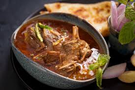

Nihari

Nihari is a slow-cooked meat stew that holds a special place in Pakistani cuisine. It originated in the royal kitchens of Delhi during the Mughal period and later became a breakfast specialty in Lahore and Karachi.
Traditionally, it is cooked overnight with beef or mutton shank, marrow bones, and spices until the meat becomes tender and the gravy rich.
Served with naan, fresh ginger, and lemon, nihari is considered a symbol of comfort food and is especially enjoyed on weekends and festive mornings.
Ingredients (serves ~4)
- Beef or mutton shank: 1 kg
- Bone marrow (optional): 2–3 pieces
- Onions: 2 medium, sliced
- Oil or ghee: 1/2 cup
- Wheat flour (atta): 3 tbsp (roasted, for thickening)
- Nihari masala: 3–4 tbsp
- Ginger-garlic paste: 2 tbsp
- Salt: to taste
- Garnish: ginger (julienned), green chilies, lemon wedges, fresh coriander
How To Make
- Fry onions golden, add ginger-garlic paste.
- Add meat and bones; cook until browned.
- Mix in nihari masala and salt; sauté with 1–2 cups water.
- Add 6–7 cups water, cover, simmer on low heat 4–6 hours until tender.
- Mix roasted flour with water, stir into curry for thickness.
- Simmer 20 min more; garnish with ginger, chilies, coriander, and lemon before serving.
Home